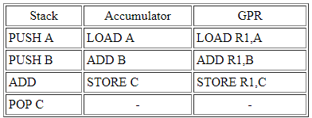

UNIDAD 2
-ESTRUCTURA Y FUNCIONAMIENTO DE LA UNIDAD CENTRAL DE PROCESAMIENTO-
2.1 ORGANIZACION DEL PROCESADOR
La Unidad de Procesamiento (CPU) controla el funcionamiento del computador y lleva a cabo sus
funciones de procesamiento de datos. Frecuentemente se le llama procesador.
Un procesador, incluye tanto registros visibles por el usuario como registros de control/estado.
Los registros visibles por el usuario pueden ser de uso general o tener una utilidad especial,
mientras que los registros de control y estado se usan para controlar el funcionamiento del procesador,
un claro ejemplo es el contador de programa.
Lleva a cabo una gran variedad de:
Cálculos.
Comparaciones numéricas.
Transferencias de datos como respuesta a las peticiones de los programas que están siendo ejecutados en memoria.
2.2 ESTRUCTURAS DE REGISTROS
REGISTROS DEL CPU
Se emplean para controlar las instrucciones en ejecución, manejar direccionamiento de memoria y propiciar la capacidad aritmética.
Los registros vienen de tres tipos: datos, direcciones e índice, que tiene lugar en casi todos los aspectos de la operación del CPU.
El tamaño de un registro depende del CPU; los más simples tienen registros que aceptan 8 o 16 bits de datos y los más complejos tienen registros de 32, 48 o 64 bits.
2.2.1 REGISTROS VISIBLES PARA EL USUARIO
Un registro visible al usuario es aquél que puede ser referenciado por medio del lenguaje máquina que ejecuta la CPU. Prácticamente todos los diseños contemporáneos de
CPUs están provistos de varios registros visibles al usuario, en oposición a disponer de un único acumulador.
Podemos clasificarlos en:
Uso General
Datos
Direcciones
Direcciones
Los registros de uso general pueden ser asignados por el programador a diversas funciones. A veces, su uso dentro del repertorio de
instrucciones es para contener el operando para cualquier código de operación.
Esto proporciona una utilización de registros de auténtico uso general. Con frecuencia, sin embargo, existen restricciones. Por ejemplo,
puede haber registros específicos para operaciones en coma flotante.
En algunos casos los registros de uso general pueden ser utilizados para funciones de direccionamiento. En otros casos hay una separación
clara o parcial entre registros de datos y registros de direcciones.
Los registros de datos pueden ser usados únicamente para contener datos y no se pueden emplear en el cálculo de una dirección de operando.
Los registros de dirección pueden ser en sí registros de uso más o menos general, o pueden estar dedicados a un modo de direccionamiento
particular. El caso más conocido es el puntero a pila. La cantidad de registros generales o especializados es una cuestión de diseño.
No hay solución óptima, pero la tendencia parece ir hacia el uso de registros especializados.
Otro problema de diseño es el numero de registros, de uso general o de datos más direcciones, que tienen que incluirse.
A mayor cantidad de registros se requieren mayor cantidad de bits en el campo de operando. Parece óptimo entre 8 y 32 registros. Menos
registros se traducen en más referencias a memoria; más registros no reducen notablemente las referencias a memoria. Por último, está
la cuestión de la longitud de los registros.
Los registros que han de contener direcciones han de ser lo suficientemente grandes como para albergar la dirección más grande. Los
registros de datos deben ser capaces de contener valores de la mayoría de tipos de datos.
Algunas máquinas permiten que los registros contiguos sean usados como uno para contener valores de doble longitud.

2.2.2 REGISTROS DE CONTROL Y DE ESTADO
REGISTROS DE CONTROL
Hay diversos registros de la CPU que se pueden emplear para controlar su funcionamiento.
La mayoría de éstos, en la mayor parte de las máquinas, no son visibles al usuario. Algunos de
ellos pueden ser visibles a instrucciones de máquina ejecutadas en un modo de control o de sistema operativo.
Naturalmente, máquinas diferentes tendrán diferentes organizaciones de registros y usará distinta terminología. Se enumera
aquí una lista razonablemente completa de tipos de registros, con una breve descripción. Son esenciales cuatro registros
para la ejecución de una instrucción: el contador de programa, el registro de dirección, el registro de instrucción y el
registro de datos.
REGISTROS DE ESTADO
El registro de estado, también conocido como registro de bandera, palabra de estado del programa y registro de código de condición,
se define como un conjunto de bits de bandera dentro de un procesador.
Un registro es un circuito procesador y es muy parecido a una ubicación de memoria, lo que significa que los datos podrían
escribirse y leerse. A diferencia de una ubicación de memoria, el registro de estado a menudo no tiene una dirección porque
el microprocesador la usa internamente. En una unidad central de procesamiento (CPU) de 8 bits, se puede establecer un bit
de registro de estado, igual al número 1, o borrar , igual al número 0, mediante una variedad de resultados de operación del
procesador. El procesador a veces establece o borra los bits, pero otras veces, una instrucción de programa particular establece
o borra los bits.
2.3 EL CICLON DE INSTRUCCIONES
CICLOS DE COMPUTADORA
La búsqueda es el proceso de obtener instrucciones de un programa o un elemento de datos de la memoria. El término decodificar se refiere al proceso de traducir las instrucciones a señales que la computadora puede ejecutar.
Ejecutar es el proceso de llevar a cabo los comandos. Almacenamiento en este contexto significa escribir el resultado a la memoria.
En algunas computadoras, el procesador busca, decodifica, ejecuta y almacena solo una instrucción a la vez. En estas computadoras el procesador espera hasta que una instrucción completa las cuatro etapas del ciclo antes de iniciar a trabajar con la siguiente instrucción.
Hoy día la mayoría de las computadoras personales soportan un concepto llamado pipelining:
Con pipelining los procesadores inician la búsqueda de una segunda instrucción antes de que se haya completado el ciclo de la computadora de la primera instrucción. Los procesadores que cuentan con pipelining habilitado son más rápidos en el procesamiento porque no tienen que esperar para que una instrucción complete el ciclo de computadora
2.3.1 CICLO FETCH-DECODE-EXECUTE
El encargado de ejecutar un programa en una computadora u otro sistema computacional es el CPU, lo realiza siguiendo el llamado ciclo Fetch Decode Execute, con este ciclo se ejecutan todas las tareas que una computadora puede realizar.
Este ciclo tiene algunas variantes y conforme ha avanzado el tiempo y la tecnología ha sufrido algunos cambios, pero el ciclo básico se conforma de las siguientes etapas:
Traer la instrucción: Se obtiene la instrucción desde memoria y se almacena en el registro del CPU para instrucciones.
Decodificar la instrucción:Se identifica el modo de direccionamiento de la instrucción y la ubicación de los datos a tratar, ya sea de
memoria, registro o instrucción directamente.
Carga de Parámetros: Se ejecuta la lectura, cargando todos los datos identificados en el paso anterior
Ejecutar:Se ejecuta la instrucción ya configurada, realiza la tarea indicada, ya sea una suma, resta, almacenar información, extraer
información etc.
Almacenar:Se almacena el resultado obtenido de ejecutar la instrucción, por ejemplo, el resultado de una suma o un índice (Número)
como resultado de éxito de almacenar u obtener información de un archivo, entre otros.
Actualizar PC:Esta etapa es la de actualizar el registro PC (Program Counter) que contiene la siguiente dirección a ejecutar.
Evidentemente al ser un ciclo estas etapas se repiten constantemente durante el funcionamiento de la computadora.
Se debe considerar que el ciclo expuesto anteriormente es muy básico. Como se mencionaba hoy en día estos ciclos han tenido algunas alteraciones y optimizado de gran manera, como se sabe los sistemas de hoy en día son multitareas, lo cual conlleva a una alteración en este ciclo, además de las diferentes técnicas para reducir el tiempo de ejecución de instrucciones con temas de concurrencia y paralelismo en los procesadores modernos.
2.3.2 SEGMENTACION DE INSTRUCCIONES
La segmentación (en inglés pipelining, literalmente 'tubería' o 'cañería', o data pipeline) es un método por el cual se consigue aumentar el rendimiento de algunos sistemas electrónicos digitales. Se usa principalmente en los microprocesadores.
El nombre, por analogía, viene de que para impulsar el gas en un oleoducto a la máxima velocidad posible es necesario dividir el oleoducto en tramos y colocar una bomba que dé un nuevo impulso al gas.
El símil con la programación existe en que los cálculos deben ser registrados o sincronizados con el reloj cada cierto tiempo para que la ruta crítica (tramo con más carga o retardo computacional entre dos registros de reloj) se reduzca.
La ruta crítica es en realidad la frecuencia máxima de trabajo alcanzada por el conjunto. A mayor ruta crítica (tiempo o retraso entre registros) menor es la frecuencia máxima de trabajo y a menor ruta crítica mayor frecuencia de trabajo. La una es la inversa de la otra. Repartir o segmentar equitativamente el cálculo hace que esa frecuencia sea la óptima a costa de más área para el almacenamiento o registro de los datos intervinientes y de un retraso o latencia (en ciclos de reloj/tiempo) en la salida del resultado equivalente al número de segmentaciones o registros realizados.
2.3.3 CONJUNTO DE INSTRUCCIONES

Un conjunto de instrucciones o repertorio de instrucciones, juego de instrucciones o ISA (del inglés Instruction Set Architecture, Arquitectura del Conjunto de Instrucciones) es una especificación que detalla las instrucciones que una CPU de un ordenador puede entender y ejecutar, o el conjunto de todos los comandos implementados por un diseño particular de una CPU.
El término describe los aspectos del procesador generalmente visibles a un programador, incluyendo los tipos de datos nativos, las instrucciones, los registros, la arquitectura de memoria y las interrupciones, entre otros aspectos.
Existe principalmente de 3 tipos: CISC (Complex Instruction Set Computer), RISC (Reduced Instruction Set Computer) y SISC (Specific Instruction Set Computer).
La arquitectura del conjunto de instrucciones (ISA) se emplea a veces para distinguir este conjunto de características de la microarquitectura, que son los elementos y técnicas que se emplean para implementar el conjunto de instrucciones. Entre estos elementos se encuentras las microinstrucciones y los sistemas de caché.
Procesadores con diferentes diseños internos pueden compartir un conjunto de instrucciones; por ejemplo el Intel Pentium y AMD Athlon implementan versiones casi idénticas del conjunto de instrucciones x86, aunque tienen diseños internos completamente opuestos.
2.4 MODOS DE DIRECCIONAMIENTO
En informática, los modos de direccionamiento son las diferentes maneras de especificar un operando dentro de una instrucción en lenguaje ensamblador.
Un modo de direccionamiento especifica la forma de calcular la dirección de memoria efectiva de un operando mediante el uso de la información contenida en registros y/o constantes, contenida dentro de una instrucción de la máquina o en otra parte.
No existe una forma generalmente aceptada de nombrar a los distintos modos de direccionamiento. En particular, los distintos autores y fabricantes de equipos pueden dar nombres diferentes para el modo de hacer frente al mismo, o los mismos nombres, a los diferentes modos de direccionamiento.
Autor: CRUZ CAMPOS ANDREA LIZBETH No.Control: 20051165